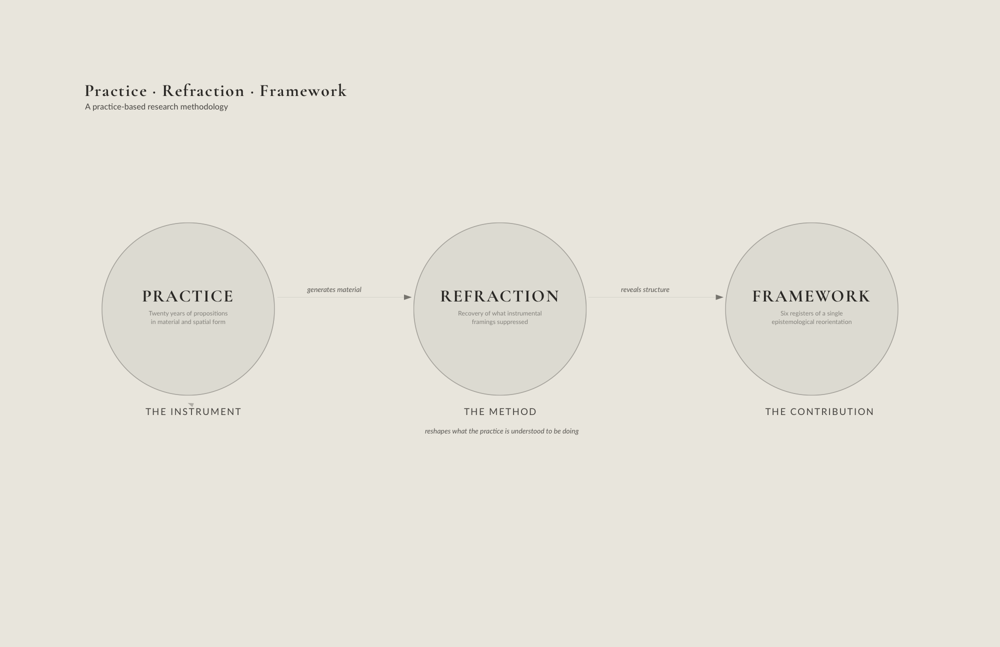
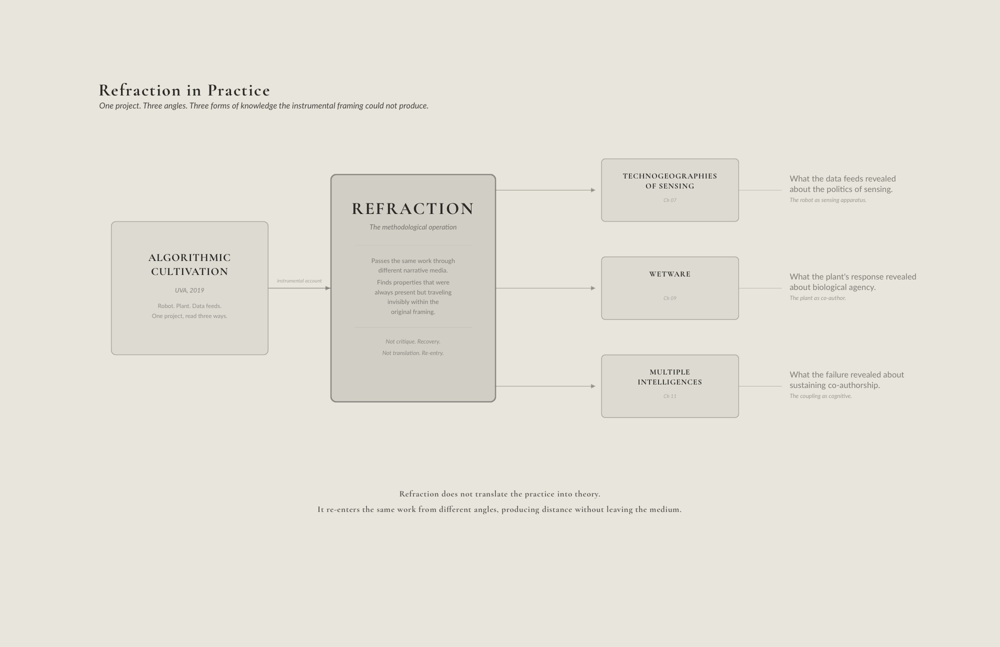
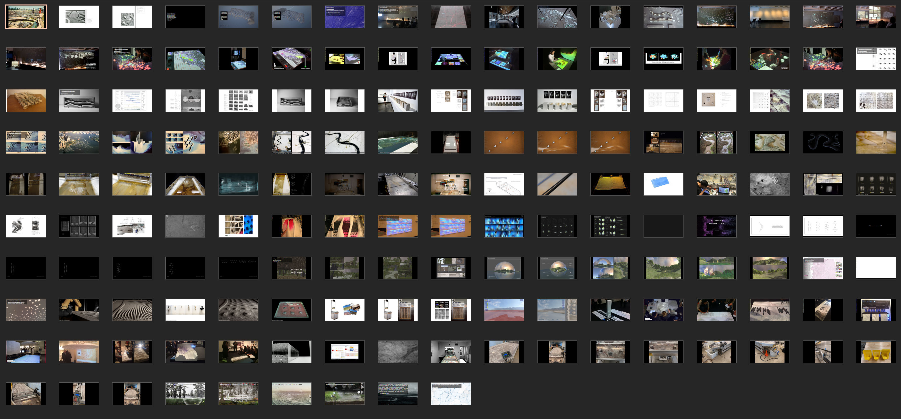
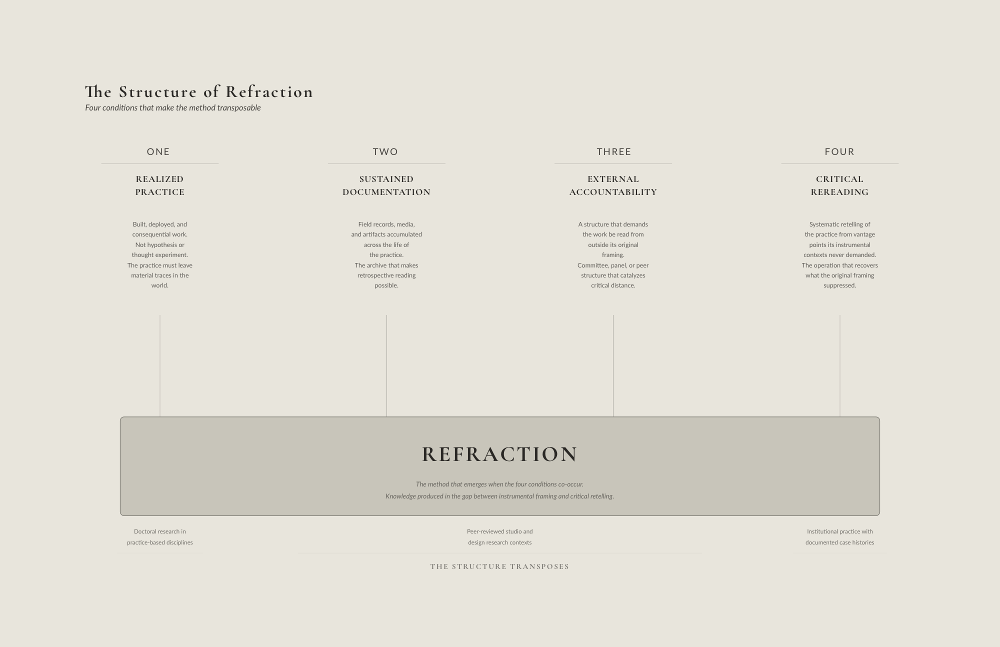

In 2006, a camera installed in the atrium of Louisiana State University’s College of Art and Design to monitor a high-contrast mural performed continuous blob detection, identifying regions of contrast difference between the mural and pedestrians moving through the space. Custom software converted those differences into real-time isolines displayed on an adjacent monitor. As people moved through the atrium, they became topographic events and their movement generated ephemeral landforms.
The installation was called Thresholds, and what it revealed was not what it was designed to demonstrate. The contour line is landscape architecture’s foundational notation, yet the exhibition exposed it as anything but fixed. Each isoline was a reading produced by the interaction between a sensing instrument and a calibrated context. Without the mural as datum, the isolines would have been noise. Change the datum and a different landscape emerges. Designing the datum decides in advance what the landscape will reveal. This is why the design of sensing instruments and their contexts is not a technical layer applied to landscape. It is integral to landscape formation itself.
Practice-Based Research

This dissertation follows practice-based methods of research as that is how this form of knowledge is produced, not by applying theory to practice, but by building, deploying, and interrogating propositions in material and spatial form.
The work develops a theoretical framework for landscape architecture operating at the territorial scale. My creative practice and scholarship are not case studies illustrating existing theory. They are the foundation from which the theory is generated, tested, and revised. The dissertation conforms to the structure of a practice-based PhD (Frayling 1993; MacLeod 2000). The written component functions as an epistemic bridge between the practice and publicly verifiable knowledge, making the practice itself legible as research. The six frameworks developed across the chapters that follow, Multiple Intelligences, Technogeographies of Sensing, Wetware, Generational Robotics, Coupled Ecologies, and Reflexive Stewardship, emerged through this process. Running through all six is the cultivant, a practitioner’s disposition rather than a framework, the ongoing negotiation between designed intention and biological agency in which maintenance is the primary design act.
Frayling (1993) distinguishes research into, for, and through art and design. This dissertation operates in the third category. Design is the primary medium of inquiry, not an illustration of conclusions reached by other means (Rust, Mottram, and Till 2007). Projects, models, interfaces, and collaborations are where the research happens. The written chapters situate that practice within the discourses of landscape architecture, engineering, and environmental design (Deming and Swaffield 2011; Swaffield and Deming 2011), providing the critical interpretation through which the practice becomes legible as doctoral contribution (MacLeod 2000).
Several projects appear in more than one chapter. Algorithmic Cultivation, the NEOM consultation, the UVA Geomorphology Lab, Designing Autonomy, Prototyping the Bay, and Indeterminate Futures each resurface across chapters because the questions this dissertation asks are not answered by any single project read from a single angle. Each chapter encounters the same practice from a different vantage point, and what adaptive epistemology reveals about the geomorphology table differs from what co-authorship reveals about it, which differs from what the politics of sensing reveals about it. This is not redundancy. It is purposeful and it is the methodology.
Gilbert Ryle called it “systematic restatement” (Ryle 1954) where the same object is described in different vocabularies, with each vocabulary revealing what the others obscure. The practice operates the same way. The reader who recognizes a project from an earlier chapter is not re-reading. They are seeing it refracted with the same facets, but with different light.
Refraction is the primary methodological contribution of this dissertation. The term names a systematic practice of retelling, passing the same body of work through different narrative media and reading each project from vantage points that its instrumental contexts never demanded. Grant narratives, book chapters, competition briefs, and consulting deliverables each required a specific framing of the work, what it does, why it matters, why it should be funded or built or published. Those framings were true but partial. They served the institutional contexts that made the work possible and in doing so they constrained what could be seen.
Refraction does not replace those framings. It holds them alongside new ones, and finds, in the gap between the instrumental account and the doctoral retelling, properties of the work that were always present but traveling invisibly within the original framing. This is not a method of critique. It is a method of recovery.
Stamm identifies the structural problem that refraction solves. Any practice research that insists on medial immanence, on remaining in the medium of the practice itself, must simultaneously establish the medial differential that makes reflection possible. Without distance from the object, there is no reflection. But if distance is achieved by leaving the material realm for discursive abstraction, the practitioner is “researching oneself out of the work” (Stamm 2013, 37). Conceptual reflection, however sophisticated, amounts to an alienation from the reality of the work itself. What the practitioner should seek, Stamm argues, is “to find a way of reflecting oneself deeper into the work, to create an immanent ‘distance’ by further immersion into the work, leveraging its depth dimensionality as the space to enter in order to find the reflective medium” (Stamm 2013, 37).
Refraction is precisely this operation. It does not translate the practice into theory. It re-enters the same projects from different angles, creating the differential that reflection requires without leaving the material medium. Each refraction produces distance, the gap between what the instrumental framing made visible and what the new angle reveals, but the distance is immanent. The practitioner is deeper in the work, not farther from it. The PRS structure, described below, provided the institutional mechanism through which this immanent distance became systematic.
The Practice Research Symposia, six biannual sessions held between 2020 and 2023 with a seventh supplementary session, were the mechanism through which refraction first became systematic and named. At each session, the same body of work was presented to the committee and a panel of external respondents. Each time, the story was told slightly differently. The projects changed minimally. The angle of inquiry changed. And from each new angle, properties emerged that no single instrumental context could have made visible. The PRS did not produce the method. It produced the conditions under which the method became legible to the practitioner conducting it.
But refraction does not end with the PRS. The dissertation itself is its continuation. Each chapter that follows encounters the practice from a different theoretical vantage, adaptive epistemology, sensing politics, multi-species authorship, generational autonomy, and each encounter is a refraction. Projects reappear not because the argument requires repetition but because the same body of work, seen from a new angle, yields new knowledge. The reader who recognizes Algorithmic Cultivation from an earlier chapter is not re-reading. They are watching the method work.
Refraction is appropriate to this practice because the knowledge it produces cannot be recovered by adding more data or conducting additional fieldwork. It is already present in the work. What it requires is a sustained, disciplined shift in the narrative medium through which the work is examined. A practice that has been building, deploying, and interrogating propositions across twenty years contains more knowledge than any single framing has been able to name. The doctoral inquiry creates the conditions in which that excess becomes legible.
Richard Blythe’s written response to PRS 3 named this structure directly. Where previous respondents had engaged the work’s content, Blythe named its architecture. “I now see two registers to your PhD,” he wrote, “and I think this is also what Claudia and others were pointing at.” The first register was the experiment, the concrete project with its own internal logic, its accumulated technical complexity, its documentation and demonstrable outcomes. The second was the speculation, the generative matrix of propositions from which the experiment had emerged and which the experiment, in its institutional life, had partially obscured. The instrumental framing, grant, competition, consultation, had served the experiment. It had contained the speculation. Refraction, as a systematic method, works precisely at that boundary, recovering what the instrumental context suppressed not by discarding the framing but by holding it alongside a new one. The tension between the two registers is not a problem to be resolved. As Blythe put it, the task was “to document both, to point to discoveries in both, and to show how the combination of registers goes beyond existing knowledge in the field.”
Paul Kelsch’s response at PRS 4 worked on the same territory from a different angle. “It’s a pretty brave thing to do,” he said, “to say. Here’s what I’ve been telling myself and my colleagues in the world about what this work is about. And yet if I’m honest with myself it’s only a certain amount truth and a certain amount lies and in the combination of those two is where the interest is.” The phrase is precise in a way that “refraction” itself struggles to be.
The instrumental framings were not wrong. They were partial, and the partiality was functional. A grant narrative that told the full story of what a project was epistemologically producing would not have been funded. A competition brief that foregrounded knowledge production over formal proposition would not have won. A consulting deliverable that led with theoretical uncertainty would not have been commissioned. Each framing performed the work’s legitimacy within the institutional context that made the work possible. The partial framing is not a failure of honesty but the condition of practice itself.
What refraction does is not expose the lie. It holds the partial truth of the original framing alongside the fuller claim the doctoral inquiry can now make, and it finds, in the gap between them, exactly what Kelsch called “where the interest is.” The combination is not a correction. It is the argument.
Marcelo Stamm’s intervention at PRS 6 named something the other refractions had approached but not quite articulated. “What is it about origins that is important,” he asked, “that all of a sudden potentialities become apparent again, the virtual space of possibilities that sits with the origins, with the inception space. Where there are all sorts of vectors in which this could go.” The question was not about the finished projects but about the moment before the instrumental framing closes, the inception point where the work could still have gone in any direction. What the PRS process had been doing, across six sessions, was returning to that inception space repeatedly, not to change what the work became but to recover what else it could have been and to find, in those unrealized directions, the epistemological structure the completed projects had made legible. The vectors were always there. The doctoral inquiry named them.
Stamm’s published epistemological framework provides the philosophical ground for what his PRS intervention performed. His argument that practice research is fundamentally concerned with “knowledge of singularities through immanent reflection,” and that the most radical way to research singularities is by creating them, “researching creation through creation” (Stamm 2013, 40), names the epistemological status of the projects documented in this dissertation. Each project is a singularity, a specific configuration of territory, technology, and practitioner that cannot be replicated and whose knowledge cannot be extracted without remainder into general principles. Stamm insists that singularity does not compromise objectivity. What is unique about a creative achievement is not subjective merely because the conditions of its formation cannot be exhaustively reiterated (Stamm 2013, 39). The refraction method does not generalize from singularities. It reads across them, finding in the pattern of unrepeatable instances the epistemological structure that no single instance could have revealed alone.
Research-Through-Design / Research-Through-Designing
Research through designing (Lenzholzer, Duchhart, and Koh 2013) names the methodological backbone of this dissertation. Design generates hypotheses in spatial and material form (Deming and Swaffield 2011), and the artifacts produced through design embody theoretical propositions that can be critiqued, compared, and tested across projects (Zimmerman, Stolterman, and Forlizzi 2010). In this dissertation, that means when the research asks how a landscape system behaves under a nascent interaction, an alternative dredge logistics, a robotic diversion, an ecological sensing network, the response is not analysis alone. It is the design, construction, and testing of spatial and technical propositions. Physical models, computational tools, sensing regimes, and territorial design studies are the hypotheses. Their deployment and evaluation are the primary research moves.
Not every question in the dissertation is addressed through design. Where the problem is primarily descriptive or historical, the research relies on textual analysis, archival reading, and argument. Each method is employed where it is most productive. Design prototyping takes priority where the question demands the reconfiguration of complex eco-technical systems rather than the interpretation of existing ones.
The political stakes of that epistemological claim became explicit at the 2016 Venice Architecture Biennale in a collaboration with VGL. The exhibition invited designers to develop branding packages for artificial landmasses being physically constructed in the South China Sea through real disputed territories and real geopolitical stakes. The work was satirical, but what it revealed was not.
An artificial island becomes sovereign territory not when sand is dredged and piled but when it appears on official maps, receives a name, and circulates in media imagery. The sensing apparatus determines which features become legible as landscape. The representational apparatus in the exhibition determined which territorial claims become legible as governance. In both cases, the instrument shapes what can be known, and what can be known shapes what can be managed, governed, or manipulated. You cannot separate the sediment from the image.
Case Study and Comparative Project Analysis

The dissertation relies on case-based research where the questions demand contextual depth rather than variable control (Deming and Swaffield 2011). River models at REAL and the UVA Geomorphology Lab, pedagogical framings of coastal islands in the Chesapeake Bay, consulting engagements for ecological infrastructures. These are not illustrations of the frameworks. They are the sites in which questions about adaptive epistemology, synthetic grounds, and Technogeographies are defined and tested. Reading across project situations, collaborations with research labs, design offices, and public agencies, reveals how methods and concepts mutate or fail under different institutional and territorial conditions. The cross-reading tests whether the concepts developed here have value beyond any single site or collaboration.
Physical and Computational Modeling as Experimental Practice
The practice’s central questions are embedded in dynamic environmental processes. Fluvial morphodynamics, sediment deposition and erosion, biological community assembly, hydrologic performance. These phenomena cannot be studied through static description. The research engages them through geomorphological models and material experiments in conversation with computational simulations and time-based visualization.
Models in this context are not prediction tools. They are heuristic instruments that produce design knowledge (Zimmerman, Forlizzi, and Evenson 2007; Lenzholzer, Duchhart, and Koh 2013). They propose rather than represent. A physical model of a deltaic system is a proposition about which processes matter and how they interact, a prototype environment in which overlapping feedback loops become visible and negotiable.
At the Responsive Environments and Artifacts Lab at the Harvard Graduate School of Design, a Kinect depth sensor mounted above a geomorphology table, a basin of synthetic sediment and programmable water flow, failed to resolve thin depositional layers. The instrument could not see the sediment at a scale that mattered. The failure was the finding, the sensing apparatus determined what could be known, and what could be known determined what could be designed. Subsequent development shifted to ultrasonic range finders and image analysis, not because the Kinect was defective, but because its limits revealed the question that needed to be asked differently.
This is what practice-based research produces that literature review cannot, knowledge that emerges from friction with material dynamics. The model is not a prediction engine. It is a site where the research encounters resistance, and resistance generates understanding.
Bart Lootsma’s observation at PRS 5 carried a particular authority. He opened by locating himself, a Dutch architectural theorist who had grown up with a school magazine full of engineering simulations, and whose uncle had planted 40 percent of the Netherlands with trees according to succession plans. He understood, from both directions, what it meant to work with systems that had their own logic. The geomorphology tables, he said, could be understood as “material computers,” devices in which “the computing is partly, of course, already in there.” He was naming a tradition in which physical models were understood to perform computation through material behavior, water finding its own solution through sediment and slope. What the digital sensing layer added was not computation but legibility, a way of reading what the material had already worked out. Matias del Campo arrived at the same term from a different direction. Where Lootsma came from modeling cultures, del Campo came from assemblage theory, the idea that “something like an assemblage is going on here between human intervention and self-assembling.” It was in that assemblage quality that he recognized the material computer, the convergence of human intention and self-organizing matter into something that neither fully controls. Two respondents, two frameworks, the same term. That convergence was itself a refraction, two angles of inquiry arriving at the same property that the original lab-equipment framing had kept invisible.
Dana Cupkova pressed the modeling argument into territory the project documentation alone had not reached. The issue of aesthetics, she argued, does not arrive at the end of the process as an output or a result. “It occurs within the model itself early on, the way you set up the model.” The aesthetic ideology is built into the feedback structure from the beginning, into the choice of what to sense, how to visualize, what counts as a meaningful response. This observation reframes the entire sensing apparatus. The instruments are not neutral recording devices that produce aesthetic results downstream. They are aesthetic arguments before the first reading is taken, decisions about what matters embedded in the model’s architecture. The design of the instrument is already the design of the knowledge it will produce.
Nicholas de Monchaux noted, almost in passing, that “the model as an agent is really interesting, the model as an autonomous agent.” The observation was brief but it named a trajectory the chapter had been tracing without quite stating it directly. The model begins as instrument, a tool for seeing. It becomes a site, a place where knowledge is produced rather than confirmed. And then, as the practice moves through responsivity toward autonomy, it begins to act, to make decisions, to generate outcomes that exceed the designer’s specification. The wildness creator is the model taken to its logical conclusion, a system that has learned enough to operate without the designer in the loop. De Monchaux saw that endpoint implied in the work before the work had fully arrived there.
Models also function as shared experimental spaces. When designers, engineers, and scientists work around the same geomorphology table or computational simulation, they are negotiating what matters through a common medium rather than across disciplinary translations. The model does not merely test a hypothesis. It shapes which hypotheses become thinkable. A specific model makes specific futures imaginable and others begin to fall away. The practice’s contribution is not advancing modeling techniques. It is making that shaping visible and negotiable.
Kelsch’s most sustained intervention across PRS 4 and 6 returned repeatedly to place. The models seemed abstract, he observed, and yet they were tied to specific conditions, the Mississippi’s sediment loads, the Atchafalaya spillway, the hydrology of the LA River. He quoted the work back directly. “The areas act to nudge and guide the River system,” and “the new riverbed is the product of interactions that guide outcomes controlled within a range.” What struck him in those phrases was not the technical claim but the value decision embedded in it. “How much wildness can we tolerate?” he asked. “The sublime isn’t sublime when it’s actual terror.” The geographic specificity of the modeling work was not a limitation to be overcome but the site where those value decisions become legible, where the interaction between designed intervention and material system reveals what a practice actually believes about indeterminacy, risk, and responsibility. Refraction does not replace that specificity with abstraction. It makes visible the values the specificity was carrying all along.
Communities of Practice and Collaborative Inquiry

The research is embedded in an ecology of collaboration among design academics, professional firms, engineering and science labs, agencies, and communities. The communities of practice framework (Lave and Wenger 1991; Wenger 1998) provides the lens for understanding how knowledge is produced within these collaborations rather than translated between actors. Working with geomorphologists in the lab, engineers in professional offices, institutional staff in workshops, and peers in design speculation produces different framings, different workflows, and different standards of evidence. Not all collaborations are equally generative. The dissertation privileges those in which I participate in problem definition, experimentation, and reflection. It is more selective about transactional engagements where design appears at the end of an externally defined brief. Chapter 04 maps this ecology in full.
Autoethnography and Reflective Practice

Many of the dissertation’s central concepts did not arrive fully formed. Interface, Technogeographies, Wetware, adaptive epistemology itself, each evolved across multiple projects, speculations, and collaborations. To trace that evolution the dissertation employs autoethnography as a complementary method (Ellis, Adams, and Bochner 2011; Adams, Holman Jones, and Ellis 2015). The accounts are not memoir. They are expressed through project moments, decisions, and interactions, and triangulated against collaborator testimony, project documentation, and published outputs (Schön 1983; MacLeod 2000). Autoethnography is most productive here when internal processes, skepticism, discomfort with compromise, enthusiasm with prototyping, reveal the resistances and catalysts that shaped how the practice developed.
Supporting Methods: Literature, Documents, and Policy
The conceptual chapters synthesize work across landscape theory, environmental humanities, science and technology studies, political ecology, and media theory. This writing functions as scaffolding for the practice rather than as the primary research driver. The central claims are generated through engagement with projects and collaborations. Scholarship provides the vocabulary through which those claims become legible, not the source from which they are derived (MacLeod 2000).
The drawing project Failure (Drawing Codes, Pratt Institute, 2019; Chicago Architecture Biennial, 2020), in collaboration with Emma Mendel, accumulated layers over months, code-generated urban forms overlaid with ink spills, chemical transfers, erasures, collaborative interventions. No layer was treated as permanent. A companion film catalogued two centuries of environmental failures, catastrophic industrial failures, levee collapses, and restoration projects abandoned when the ecological behavior they were designed around failed to materialize. These were predictive models that were invalidated by the systems they claimed to describe.
The argument was direct. Complexity makes certain prediction impossible. Accepting this does not require abandoning design. It requires abandoning the assumption that design’s role is to prevent failure and replacing it with the orientation Nassim Taleb calls anti-fragility (Taleb 2012), designing systems that become stronger through disruptions that cannot be predicted.
What these projects share, Thresholds, Branding Islands, the labs, and Failure, is a commitment to maintaining the capacity for ongoing learning, not delivering completed knowledge, but establishing the conditions under which knowledge continues to be produced. The following year, the lab’s geomorphology table documentation was minted incrementally on the Tezos blockchain throughout the Venice Architecture Biennale, a distributed archive built on the premise that experiments conducted today may prove relevant to questions not yet formulated.
That reorientation, developed through project-based research across twenty years, is the argument this dissertation advances.
Why Some Methods Are Not Central
This constellation of methods also defines what the dissertation does not try to do. The primary unit of analysis is the project in its milieu, not a statistical population. The work does not pursue laboratory science in the narrow sense of controlled experiments on single variables. It does not present a purely theoretical or historical treatise developed in isolation from practice, concepts are held accountable to their usefulness in the practice of landscape architecture with design offices, engineers, scientists, agencies, and communities. It does not propose a universal toolkit of methods, it offers a repertoire of situated approaches that focus on design research, collaborative modeling, case-based inquiry, communities of practice, and autoethnographic reflection, which others may adapt to their own ecologies of practice.
In short, the dissertation adopts methods that keep design, collaboration, and dynamic environments at the center, and intentionally sidelines methods that presuppose stable objects, fully controllable variables, or disembodied observation.
Full project documentation is gathered in Appendix A.
These are the questions the methodology is designed to hold open. The chapters that follow do not resolve them, they demonstrate what it looks like to work inside them, through the communities, tools, and territories where the research was actually made.